의공산업기사 (2011-10-02 기출문제)
1과목: 기초의학 및 의공학
1. 광센서를 이용한 측정 방식의 장점이 아닌 것은?
- 크기가 작다.
- 전기적 위험이 적다.
- 주변의 빛에 예민하다.
- 외부의 전기적 방해로 인한 영향이 적다.
(정답률: 83%)

2. 다음 중 피부가 인지하는 자극이 아닌 것은?
- 차가움
- 뜨거움
- 눌림
- 단 맛이 남
(정답률: 97%)
3. 다음 그림은 폐용적과 폐용량을 나타낸 그래프이다. 그림 중 B가 가리키는 것은?
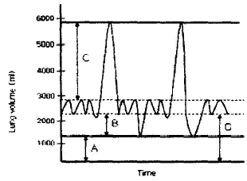
- 호기예비량(expiratory reserve volume)
- 잔기량(residual volume)
- 흡기예비량(inspiratory reserve volume)
- 기능적 잔기용량(functional residual capacity)
(정답률: 86%)
4. 직육면체의 금속에 열을 가하고 길이의 변화에 따른 저항을 측정하였다. 열에 의해 금속의 길이는 20% 늘어났고, 면적은 10% 증가했다. 저항계수가 열에 의해 10% 증가했다면 총 저항의 변화율은?
- 10% 감소
- 10% 증가
- 20% 감소
- 20% 증가
(정답률: 84%)
5. 센서의 미세한 직류 저항 변화를 측정하는 용도로 사용될 수 있는 회로는?
- 휘스톤 브리지 회로
- 다이오드 브리지 회로
- LC 병렬 공진 회로
- LC 직렬 공진 회로
(정답률: 92%)
6. 심전도의 발생 원리에 대한 설명 중 옳은 것은?
- 주로 동방결절의 탈분극과 재분극의 그래프로 나타난다.
- 심방과 심실의 기계적인 이완과 수축이 그래프에 가중 되어 나타난다.
- 심장의 동방결절에서 나오는 활동전위만을 전기신호로 바꾸어 준 것이다.
- 전기적 자극에 의해 발생, 전파되는 전기적 활동은 신호가 미약하여 심전도에서 검출되지 않는다.
(정답률: 75%)
7. 다음 중 연결이 옳지 않은 것은?
- 내장근 : 평활근, 불수의근
- 골격근 : 횡문근, 수의근
- 심장근 : 횡문근, 불수의근
- 심장근 : 평활근, 불수의근
(정답률: 67%)
8. 용량성 센서의 정전용량 관계식으로 옳은 것은? (단, C : 정전용량, s : 판의 면적, d : 판 사이의 거리, ε : 유전율)
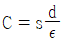
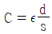
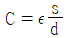
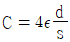
(정답률: 83%)
9. 두 개의 코일을 같은 축 방향으로 배열하여 상호인덕턴스의 변화로부터 위치 변화를 측정하는 센서의 종류는?
- 압전 센서
- 유도성 센서
- 서미스터
- 열전쌍
(정답률: 85%)
10. 전극과 전해질간의 경계면에서 전류가 흐를 때의 전위와 흐르기 전의 평형상태의 전위 차이는?
- 변위전류(displacement current)
- 반전지전위(half-cell potential)
- 과전위(overpotential)
- 오프셋전위(offset potential)
(정답률: 36%)
11. 전극의 올바른 사용법이 아닌 것은?
- 서로 다른 특성의 전극을 동시에 사용한다.
- 전극의 리드선과 전극의 연결부분이 움직이지 않도록 한다.
- 전해질 겔(electrolyte gel)을 사용하는 경우 전극의 전해질 겔이 마르지 않도록 한다.
- 장시간 사용시에는 적절히 전극을 교체한다.
(정답률: 87%)
12. 디지털화 되어 저장된 신호를 아날로그 신호로 변환시켜 주는 장치는?
- ADC
- TDC
- DAC
- CFD
(정답률: 85%)
13. 압전소자에 전압을 가하면 변형이 생기는 현상을 이용한 장치가 아닌 것은?
- 초음파 쇄석기
- 진단용 초음파 영상기기
- 도플러 혈류측정기
- 심음도 측정장치
(정답률: 78%)
14. 생체표면전극에 대한 설명으로 틀린 것은?
- 전극의 금속에서 발생하는 분극전압이 작아야 한다.
- 오랫동안 안정적으로 체표면과의 접촉을 유지하여야 한다.
- 피부와의 접촉 임피던스를 줄이기 위하여 페이스트(paste)를 사용한다.
- 접촉저항은 면적에 비례하기 때문에, 실제 표면에 접촉하는 면적을 줄여야 한다.
(정답률: 79%)
15. 다음 그림은 일회용 금속판 전극(disposable electrode)을 나타낸 것이다. 그림에서 금속판 부분은?
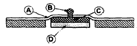
- Ⓐ
- Ⓑ
- Ⓒ
- Ⓓ
(정답률: 89%)
16. 뇌 중 몸의 평형, 운동 및 근의 긴장도에 관한 감각 정보를 담당하여 정상체온을 유지하는 항원 조절기에 해당하는 것은?
- 대뇌
- 간뇌
- 소뇌
- 중뇌
(정답률: 82%)
17. 생체조직의 전기전도도가 조직의 양에 비례한다는 원리를 이용한 측정방법은?
- 교류저항혈량측정법(impedance plethysmography)
- 랩온어칩(lab-on-a-chip)
- 선형보간법(linear interpolation)
- 전기영동법(electrophoresis)
(정답률: 81%)
18. 전해질 겔(electrolyte gel)을 사용하지 않는 전극은?
- 건성 전극(dry electrode)
- 부유 전극(floating electrode)
- 금속판 표면 전극(metal-plate electrode)
- 일회용 금속판 전극(disposable electrode)
(정답률: 87%)
19. 화학센서로 측정할 수 있는 것은?
- 변위
- 온도
- 압력
- 수소이온농도
(정답률: 92%)
20. 세포막을 통한 물질 이동 능동 수송에 대한 설명으로 틀린 것은?
- 세포는 세포내에 K+는 높게, Na+는 낮게 유지한다.
- 에너지를 사용하여 물질이 이동된다.
- 농도 경사에 반대하여 운반되는 물질이동 방식을 능동 수송이라 한다.
- 포도당이나 아미노산은 농도 경사에 반대되는 능동수송이 일어나지 않는다.
(정답률: 73%)
2과목: 의용전자공학
21. 그림과 같은 카르노맵의 가장 간단한 논리식은?
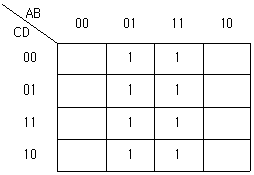
- A
- B
- C
- D
(정답률: 86%)
22. Hartley 발진기에서 궤환 요소에 해당하는 것은?
- 용량 C
- 저항 R
- 코일 L
- 트랜지스터 Tr
(정답률: 78%)
23. IB = 20㎂이고, IC = 2mA가 흐르는 트랜지스터 IE는 얼마인가?
- 2.92[mA]
- 2.02[mA]
- 1.98[mA]
- 1.28[mA]
(정답률: 74%)
24. 어느 일정시간 동안의 전기에너지 총량은?
- 전압
- 전류량
- 저항
- 전력량
(정답률: 86%)
25. 자계의 세기가 5 × 102[A/m]인 평등자계 속에 단면이 10[cm2인 물체를 두었을 때, 이 물체를 지나는 자속이 4 × 10-4[Wb]라고 하면 이 물체의 투자율 [H/m]은?
- 2 × 10-4
- 4 × 10-4
- 6 × 10-4
- 8 × 10-4
(정답률: 43%)
26. 어떤 도체의 단면에 2분 동안 120[C]의 전기량이 통과 하였을 때 전류는?
- 1[A]
- 2[A]
- 3[A]
- 4[A]
(정답률: 84%)
27. 심장의 심실이완기 초기에 나는 심음으로 반월판막이 닫힐 때 나는 심음은?
- 제 1 심음
- 제 2 심음
- 제 3 심음
- 제 4 심음
(정답률: 84%)
28. 다음과 같은 진리표를 갖는 플립플롭은?
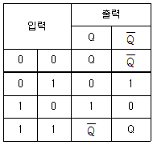
- D 플립플롭
- T 플립플롭
- JK 플립플롭
- RS 플립플롭
(정답률: 88%)
29. 다음 중 생체신호 측정시 고려사항이 아닌 것은?
- 측정신호시 잡음은 문제가 되지 않는다.
- 인체에 주는 피해를 최소화 하도록 한다.
- 계측은 온도, 소음 등 계측에 필요한 환경을 유지한다.
- 정확한 센서 부착위치와 계측 조작방법을 습득해야 한다.
(정답률: 92%)
30. 다음 반파 정류된 전압의 평균값은?
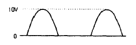
- 약 3.2[V]
- 약 5.2[V]
- 약 6.4[V]
- 약 10[V]
(정답률: 72%)
31. 출력 에너지와 입력 에너지의 비로서 손실이 발생하여 에너지를 얼마나 잃었는지, ‘즉 얼마나 입력 에너지가 유효하게 작용하는지를 나타내는 것’을 무엇이라 하는가?
- 효율
- 전력
- 전압
- 전류
(정답률: 83%)
32. 생체계측을 위한 기본 구성 중 신호처리에 대한 설명이 아닌 것은?
- 센서의 전기적 출력을 필요에 따라 적절하게 처리
- 증폭 혹은 감쇄 과정을 통하여 신호의 크기 조정
- 여파기(필터)를 통하여 신호의 주파수 성분 선택
- 물리화학적인 측정량을 전기적 출력으로 변환
(정답률: 66%)
33. 생체계측에 있어서 의학적 매개변수 중 물리적 변수에 해당하지 않은 것은?
- 힘
- 압력
- 음파
- 이온농도
(정답률: 92%)
34. 바이폴라 트랜지스터의 접합면의 온도가 상승하면 전류이득 βDC의 변화는?
- 증가
- 감소
- 변화 없음
- 증가, 감소를 반복
(정답률: 74%)
35. 두 신호의 차를 증폭하는 것으로 입력에 두 위상의 전압 V1, V2를 가했을 때, 출력전압의 크기가 V1, V2 차에 비례하는 회로는?
- 차동증폭회로
- 연산증폭회로
- 전력증폭회로
- 반전증폭회로
(정답률: 88%)
36. ECG신호의 R파 피크를 추출하기 위한 적절한 신호처리 장치는?
- 미분기
- 적분기
- 가산기
- 정류기
(정답률: 57%)
37. 두정부나 후두부에서 잘 나타나고, 시각 및 감각자극에 의해 억제되는 EEG 파형은?
- 델타(Delta)파
- 세타(Theta)파
- 알파(Alpha)파
- 베타(Beta)파
(정답률: 79%)
38. 다음 중 LC 발진기로서 가장 널리 사용되는 것은?
- 암스트롱(Amstrong)
- 클랩(Clap)
- 콜피츠(Colpitts)
- 하틀리(Hartley)
(정답률: 85%)
39. 전자유량계의 원리는 다음 중 어떠한 법칙에 근거한 것인가?
- 렌쯔(Lentz)의 법칙
- 패러데이(Faraday)의 전자유도 법칙
- 플레밍(Fleming)의 왼손 법칙
- 비오사바르(Biot-Savart)의 법칙
(정답률: 87%)
40. 다음 그림과 같이 두 개의 저항이 병렬로 접속되어 있을 때 저항 R2=3[Ω]에 흐르는 전류는?
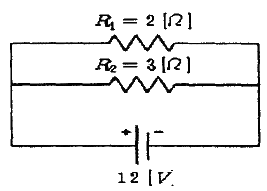
- 2[A]
- 4[A]
- 6[A]
- 8[A]
(정답률: 71%)
3과목: 의료안전ㆍ법규 및 정보
41. 의료기기법상 의료기기 기술문서 등 심사의뢰서의 첨부자료가 아닌 것은?
- 전자파 안전에 관한 자료
- 생물학적 안전에 관한 자료
- 전기·기계적 안전에 관한 자료
- 물리·화학적 안전에 관한 자료
(정답률: 83%)
42. 의료기기의 전기·기계적 안전에 관한 공통기준규격에서는 의료기기와 관련된 누설전류를 분류하여 그 시험방법과 제한치를 규정하고 있는데, 누설전류의 종류가 아닌 것은?
- 접지누설전류
- 외장누설전류
- 표유누설전류
- 환자누설전류
(정답률: 96%)
43. 컴퓨터에서 사용하는 정보의 양 단위인 1 킬로바이트[KB]는 다음 중 어느 것과 같은가?
- 100 바이트
- 1024 바이트
- 1000000 바이트
- 1024000 바이트
(정답률: 78%)
44. 의료기기의 생물학적 안전을 위한 초기 평가시험에 해당 되는 것은?
- 발암성시험
- 생분해성시험
- 이식시험
- 만성독성시험
(정답률: 73%)
45. 의료정보학의 올바른 코드 분류가 아닌 것은?
- 문자(letter) 코드
- 조합(combination) 코드
- 연상(mnemonic) 코드
- 숫자(number) 코드
(정답률: 66%)
46. 다음은 특정고압가스 사용신고를 하여야 하는 경우이다. ( ) 안에 알맞은 것은?
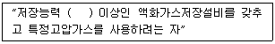
- 50킬로그램
- 100킬로그램
- 150킬로그램
- 250킬로그램
(정답률: 79%)
47. 다음에 나열된 위해 의료폐기물은 어디에 포함되는가?
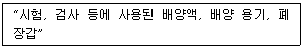
- 조직물류폐기물
- 손상성폐기물
- 병리계폐기물
- 혈액오염폐기물
(정답률: 83%)
48. 의료기사 등에 관한 법률에서 말하는 의료기사, 종별에 해당하지 않는 것은?
- 임상병리사
- 방사선사
- 작업치료사
- 의무기록사
(정답률: 85%)
49. 데이터베이스 설계 단계를 올바른 순서로 나타낸 것은?
- 요구조건 분석 → 개념적 설계 → 논리적 설계 → 물리적 설계 → 구현
- 요구조건 분석 → 개념적 설계 → 물리적 설계 → 논리적 설계 → 구현
- 요구조건 분석 → 논리적 설계 → 개념적 설계 → 물리적 설계 → 구현
- 요구조건 분석 → 논리적 설계 → 물리적 설계 → 개념적 설계 → 구현
(정답률: 82%)
50. 의료기기법에 의거 의료기기 등급분류 기준 중 잠재적 위해성에 대한 판단 기준이 아닌 것은?
- 인체와 접촉하고 있는 기간
- 침습의 정도
- 구강내에서의 화학적 변화 여부
- 약품이나 에너지를 환자에게 전달하는지 여부
(정답률: 87%)
51. 혈압 검사 또는 맥파 검사용 기기의 품목 중 등급이 다른 것은?
- 맥파계
- 안저혈압계
- 혈압감시기
- 수은주식혈압계
(정답률: 91%)
52. PACS의 영상획득부에서 사용하는 장치는?
- film digitizer
- CDJ
- ATM
- 플로터
(정답률: 85%)
53. 수술부, 응급부, 일반병실, 기타 실의 벽면 또는 천정 등에 설치되어 용도에 맞는 의료가스를 사용할 수 있도록 만든 장치는?
- 차단 장치
- 지역경보 장치
- 단말구 장치
- 저장 장치
(정답률: 79%)
54. 의료기기법상 의료기기의 등급을 분류할 때 2가지 이상의 등급에 해당하는 경우 분류 방법은?
- 가장 높은 위해도에 따른 등급으로 분류
- 가장 낮은 위해도에 따른 등급으로 분류
- 가장 높은 적합도에 따른 등급으로 분류
- 가장 낮은 적합도에 따른 등급으로 분류
(정답률: 82%)
55. 방사선 관련 종사자 중 1개월마다 1회 이상 방사선 피폭선량 측정을 받아야 하는 경우는?
- 티 엘배지를 사용하는 경우
- 방사선 차폐시설을 사용하는 경우
- 필름배지를 사용하는 경우
- 방사선 측정 기관에 종사하는 경우
(정답률: 82%)
56. 다음 ( ) 안에 알맞은 것은?
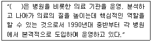
- 병원정보시스템
- 전문가시스템
- 사무자동화시스템
- 원격의료시스템
(정답률: 82%)
57. 국내 병원정보시스템과 관련된 용어 중 잘못 연결된 것은?
- OCS - 처방전달시스템
- HIS -병원정보시스템
- EMR -응급의료정보시스템
- PACS - 의료영상저장 및 전송시스템
(정답률: 86%)
58. 원격의료를 행함으로써 얻을 수 있는 장점이 아닌 것은?
- 집에 있는 환자에 대하여 전문의의 적절한 수준의 진료가 가능하다.
- 지역이나 위치에 상관없이 가장 적절한 장소에서 가장 적합한 의료진에 의한 올바른 처치가 가능하다.
- 데이터의 공유와 손쉬운 접근성으로 인해 지속적인 진료가 가능하다.
- 의사들이 지역적 종속성을 갖게 됨으로써 결속력이 높아진다.
(정답률: 84%)
59. 진단용 방사선 발생장치에 해당되지 않는 것은?
- 유방 촬영용 장치
- 진단용 엑스선 장치
- 자기공명 영상 장치
- 전산화 단층 촬영 장치
(정답률: 82%)
60. 매크로 쇼크(macro shock)에 대한 설명 중 틀린 것은?
- 접촉면적이 넓은 쪽이 좁은 쪽에 비해 감전되기 쉽다.
- 전류의 주파수가 낮은 쪽이 높은 주파수보다 감전되기 쉽다.
- 체중이 가벼운 쪽이 무거운 쪽보다 감전되기 쉽다.
- 마이크로 쇼크에 비해 심실세동의 위험이 적다.
(정답률: 64%)
4과목: 의료기기
61. 피부저항이 거의 없을 정도의 높은 서로 다른 주파수를 교차시켜 주파수의 차이만큼 발생하는 새로운 주파수 파형을 이용하는 기기는?
- 고주파 치료기
- 저주파 치료기
- 간섭파 치료기
- 레이저 치료기
(정답률: 80%)
62. 환자감시장치의 측정항목이 아닌 것이 포함된 것은?
- 심전도, 혈중산소포화도
- 혈중산소포화도, 호흡수
- 호흡수, 체온
- 체온, 근전도
(정답률: 90%)
63. 대동맥 내에 삽입되어 풍선의 수축과 확장에 의해 심장의 후부하를 감소시키는 기기는?
- VAD
- 원심형 혈액펌프
- 축류형 심실보조기
- IABP
(정답률: 94%)
64. X-선 장치에서 콤프턴 산란으로 인해 해상도가 나빠지는 것을 막는 장치는?
- 그리드
- 반음영
- X-증감기
- 영상증배관
(정답률: 82%)
65. 혈압의 직접 측정에 사용되는 도구가 아닌 것은?
- 도관
- 압박대(Cuff)
- 압력센서
- 증폭기
(정답률: 88%)
66. 인공심폐기의 구성 요소 중 산소공급과 이산화탄소 제거 기능을 하는 것은?
- 산화기
- 저혈조
- 열교환기
- 여과기
(정답률: 86%)
67. 다음 중 분광 광도법으로 검사할 수 없는 항목은?
- 성분 검사
- 혈청 검사
- 적혈구/백혈구 검사
- 호르몬 검사
(정답률: 71%)
68. 초음파 치료기기에서 이용되는 주파수의 범위는?
- 100Hz ~ 200Hz
- 1000Hz ~ 2000Hz
- 0.5MHz ~ 5MHz
- 100MHz 이상
(정답률: 79%)
69. 심장의 전기적, 기질적인 혼돈상태로서 심근군이 통일되지 않게 제각기 수축과 이완을 반복하는 현상을 무엇이라 하는가?
- 세동
- 비동기형
- 전극
- FES
(정답률: 82%)
70. 제세동기의 에너지 형태에 대한 설명으로 옳지 않은 것은?
- 단상파형은 전류를 한 방향으로만 흐르게 한다.
- 이중파형을 사용할 때는 에너지의 크기를 증가시킨다.
- 이중파형은 전류가 한 극에서만 흐르지 않고 한 극에서 흐른 전류가 다른 극으로 이동해 파형의 모양이 위아래로 흔들리는 모양이 된다.
- 이중파형 제세동기는 단상파형에 비해 크기와 무게를 줄일 수 있어 더 다양한 곳에서 사용이 가능하다.
(정답률: 68%)
71. 인체내에 고에너지를 갖는 충격파를 집중적으로 가해 체내 결석 등을 수술 없이 치료할 수 있는 장비는?
- Ultrasound Scanner
- ESWL
- PDT
- MRI
(정답률: 86%)
72. 다음 중 심박출량의 정의로 옳은 것은?
- 심장박동 1회당 심장에서 대동맥으로 밀어내는 혈류량
- 심장박동 1분당 심장에서 대동맥으로 밀어내는 혈류량
- 심장박동 1시간당 심장에서 대동맥으로 밀어내는 혈류량
- 심장박동 1일당 심장에서 대동맥으로 밀어내는 혈류량
(정답률: 84%)
73. 다음 중 혈액투석의 단점으로 옳은 것은?
- 스케줄에 맞게 주 2~3회 투석실에 와야 한다.
- 신체에 카테터를 달고 있어야 하므로 세균침입에 대해 방어기구가 없어 염증 유발이 쉽다.
- 복막투석에 비해 꽤 큰 물질도 통과시키기 때문에 혈중의 단백질, 비타민 등이 소실될 수 있다.
- 포도당이 체내에 흡수되기 때문에 비만이나 고지혈증의 위험이 크다.
(정답률: 67%)
74. 혈액투석의 원리가 아닌 것은?
- 전도
- 확산
- 대류
- 초여과
(정답률: 52%)
75. 감마나이프(Gamma Knife)의 구성에 해당되지 않는 것은?
- 조사부(radiation unit)
- 고조파 발진부
- 콜리메터 헬멧(collimator helmet)
- 환자 테이블
(정답률: 69%)
76. MRI 영상장치의 구성 요소 중 정자기장의 비균질성을 부분적으로 수정하기 위해 사용되는 것은?
- RF코일
- gradient코일
- 초전도자석
- shim코일
(정답률: 69%)
77. 다음 중 물의 CT 번호는?
- -1000
- 0
- 1000
- 2000
(정답률: 88%)
78. 인공 페이스메이커의 적용 증상으로 가장 거리가 먼 것은?
- 부정맥
- 출혈
- 심부전증
- 서맥
(정답률: 80%)
79. 청력검사기에서 자극음을 조절하는 기본 항목은?
- 음압과 파형
- 음의 세기와 주파수
- 주파수 변조와 자극시간
- 주파수 변조와 파형
(정답률: 72%)
80. 인큐베이터를 이용할 수 있는 환자와 적정온도를 알맞게 짝지은 것은?
- 산모 - 약 31℃
- 성형 환자 - 약 33℃
- 골다공증 환자 - 약 35℃
- 조산아 - 약 37℃
(정답률: 86%)
5과목: 의용기계공학
81. 무한히 반복해서 응력을 가해도 파괴가 일어나지 않는 기계적 성질을 무엇이라 하는가?
- 피로한도
- 인장강도
- 취성파괴
- 탄성변형
(정답률: 87%)
82. 다음 중 생체의 심부 가온에 사용할 수 있는 에너지를 옳게 나열한 것은?
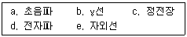
- a, d
- b, c
- a, c
- d, e
(정답률: 80%)
83. Ti의 특성에 대한 설명으로 옳지 않은 것은?
- 기계적 가공성이 우수하다.
- 응력부식이 거의 없다.
- 내식성이 우수하다.
- 원소 첨가로 합금 제조가 용이하다.
(정답률: 44%)
84. 스프링 와셔에 대한 설명으로 옳은 것은?
- 연속적이며 직선 모양이다.
- 코일 형상으로 전기와 연결한다.
- 동력을 전달할 경우 사용한다.
- 나사풀림을 방지하기 위해 사용한다.
(정답률: 91%)
85. 다음 중 하지의지의 종류가 아닌 것은?
- 고관절의지
- 슬관절의지
- 대퇴의지
- 견갑의지
(정답률: 88%)
86. 모멘트 암의 길이가 10[cm]인 곳에 1[kgf]이 가해질 경우 모멘트는 몇 [Nㆍm] 인가?
- 0.98
- 1
- 10
- 9.8
(정답률: 66%)
87. 물체에 하나 이상의 힘이 가해졌을 때, 합성모멘트는 전체 힘에 의한 각 모멘트들의 벡터합으로 구할 수 있다. 다음 그림에서
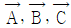
의 관계로 옳은 것은?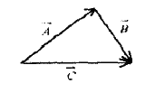
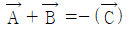
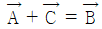
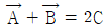
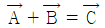
(정답률: 67%)
88. 다음 중 동력전달 효율이 가장 높은 것은?
- 마찰차
- 스퍼기어
- 벨트
- 브레이크
(정답률: 80%)
89. 생체재료의 기계적 특성을 평가하는 방법이 아닌 것은?
- 마모시험(Wear test)
- 피로시험(Fatigue test)
- 경도시험(Hardness test)
- 접촉각시험(Contact angle test)
(정답률: 86%)
90. 고분자 생체재료의 기계적 생체적합성으로 고려해야 할 성질이 아닌 것은?
- 미반응 단량체(monomer)의 양
- 인장 강도
- 압축 강도
- 탄성 계수
(정답률: 70%)
91. 다음 중 운동학(kinematics)에서 다루지 않는 것은?
- 관절각속도
- 보장(stop length)
- 관절각도
- 지면반력
(정답률: 82%)
92. 생체조직에 이식한 후 시간이 경과되면 모두 소멸되는 생체재료는?
- 생체복합재료
- 생체재흡수재료
- 생체불활성재료
- 생체활성재료
(정답률: 81%)
93. 면역원으로부터 생체를 방어하기 위한 방벽은 기본적으로 3가지로 분류되는데, 이 분류에 해당하지 않은 것은?
- 피부와 같은 물리적 방벽
- 효소와 항체 같은 화학적 방벽
- 표적 지향성을 지닌 세포독성 T 림프구(T 세포)와 같은 세포적 방벽
- 생체재료 표면에 부착된 단백질이나 인접한 세포 사이에 교환되는 신호에 의한 생리학적 방벽
(정답률: 57%)
94. 생체재료로 사용되는 것으로 탄성계수가 가장 작은 것은?
- 스테인리스 스틸(Stainless steel)
- 알루미늄(Aluminium)
- 지르코늄(Zirconium)
- 활액(Synovial fluid)
(정답률: 72%)
95. 인공골(뼈)의 재료로 가장 널리 사용되는 세라믹은?
- Zirconia
- Hydroxyapatite
- Glass
- Graphite
(정답률: 80%)
96. 편직 또는 제직하여 인공혈관 재료로 사용하고 있는 합성고분자 재료는?
- 폴리우레탄(PU)
- PVC
- 폴리에틸렌(PE)
- 폴리에스터(polyester)
(정답률: 66%)
97. 인체의 구조적 결함이나 기능이 상실 및 저하된 곳을 인위적인 기구나 장치를 통하여 기능회복, 직·간접적인 치유, 악화를 방지해주는 장치는?
- 의지
- 보조기
- 인공관절
- 스텐트
(정답률: 86%)
98. 다음 중 방사선을 측정하는 단위가 아닌 것은?
- Wb(Weber)
- Sv(Sivert)
- R(Roentgen)
- Gy(Gray)
(정답률: 79%)
99. 생체조직이 나타내는 일반적인 물리적 특성으로 잘못 나열된 것은?
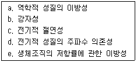
- a, b
- a, e
- b, c
- d, e
(정답률: 78%)
100. 탄성과 점성을 동시에 가지고 있어서 액체를 모델링하는데 많이 사용되는 것은?
- 나사와 대시폿
- 스프링과 대시폿
- 나사와 스프링
- 실리콘과 나사
(정답률: 81%)